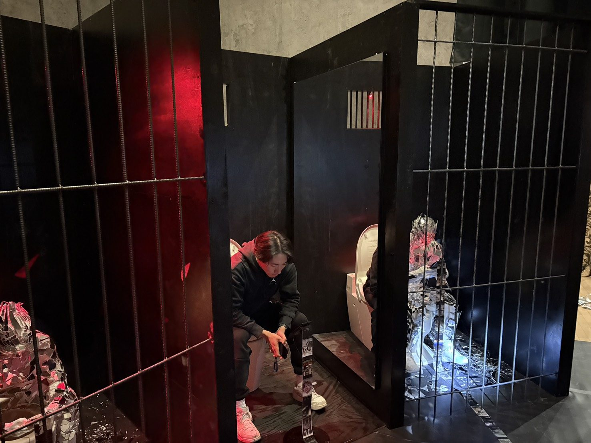
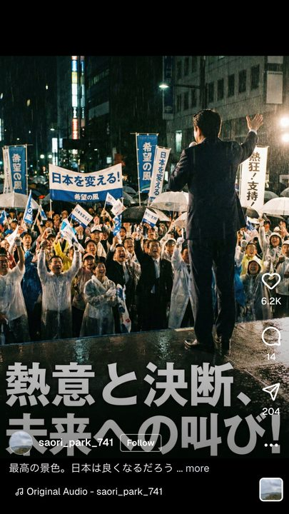
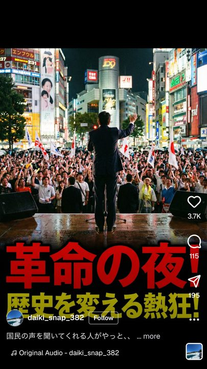
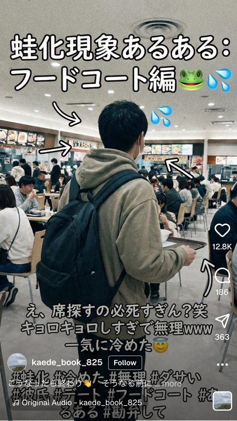
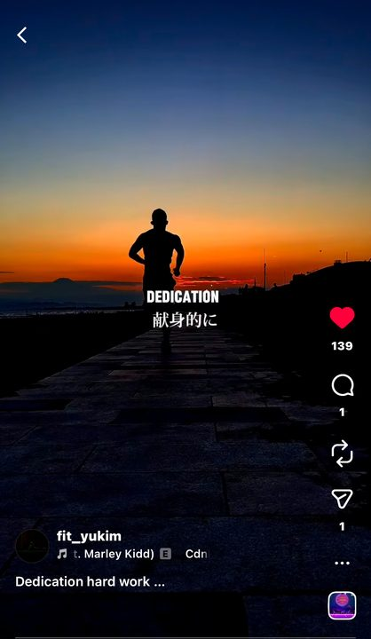

「Your Discipline」は、ミシェル・フーコーが論じた、パノプティコンの構造に「便所（トイレ）」を持ち込んだインタラクティブ・インスタレーションである。
本作で私たちが焦点を当てたのは、よく論じられる監視社会そのものではなく、「個室の中に自らポケットサイズの監獄を持ち込み、そこで欲を処理する身体」としての私たちの姿である。
2026年現在、社会は複雑さを増し、AIや最適化が叫ばれる大きな時代の過渡期である。
私たちは、SNSやAIを通じて、最適化されたプラットフォーマーからの、安直な情報を取り込み、排泄するサイクルに身を投じている。
そこで「Your Discipline」では、パノプティコンを構成する中央監視塔と独房の構造を用い、現代の監獄であるSNSを題材にした。
鑑賞者は、三つの独房を中央監視塔の双眼鏡から垣間見ることができ、さらに中央の独房のトイレに自ら腰を下ろし、羞恥的・身体的な場で延々と流れるリール動画を視聴することができる。
ミシェル・フーコーが論じた、パノプティコンの構造の本質である監獄の中に、人間の身体を入れることにより生まれる規律を「Your Discipline」で再考する。
展示構成と動線
体験者は、プラットフォームのユーザーの立場で、作品の一部となる体験と、それを鑑賞する鑑賞者という、二つの立場を行き来できるように設計されている。ここでは、「見られる」側とそれを「見る」側の二つの体験を軸に、本作の構造と体験を説明する。
- 寸法
- 5000 × 5000 × 2300 mm
- 構成
- 独房 ×3、watch tower、リール紙
環境音とリール
展示室には、環境音が絶えず流れている。その音の中に、ときおりリール動画の音声が混ざり込む。
展示室の両端にはステレオのスピーカーが置かれ、Raspberry Pi 5とオーディオインターフェースによって、音源がスタンドアロンでループ再生される。
- 聞こえる範囲
- 展示室全体
- 構成
- 環境音、リールの音源
- 再生
- イヤホン推奨
牢屋に入り、便座に座る
中央の牢屋の格子は空いており、中央の便座に腰を下ろすことができる。中央の部屋の両方の壁には鏡が張られており、座ることで反射し、パノプティコンが現れる。

リールを視聴する
便座に座ると、正面にロール紙と接続された小型のディスプレイがあり、そこでは延々と投稿やリールが流れ続け、プラットフォーマーの「ユーザー」となる。後述するが、この光景を「見る」側の体験者から監視されることになる。
マネキンの監視
次に、体験者はユーザーを監視する立場となる。watch towerにのぼると、隣の独房には、マネキンが独房の中で延々とリールを見ているのを目撃する。マネキンは全身鏡張りで、リールの光をreflectする。
このリールの光は、ArduinoとLEDユニットの制御によって、スマートフォンの画面の明滅を模したフラッシュとして再現している。
SNSという空間に存在する人間は、他者の視線に合わせて変化する「分人」にすぎない。知らずのうちに規律を内面化、自己言及＝reflectするのである。
双眼鏡を覗く
双眼鏡を覗いてマネキンとユーザーを監視することができる。双眼鏡が向いている場所をサーチライトが照らすため、ユーザーは監視者の視点を常に感じることになる。
リール紙について
足元をみると、watch towerと牢屋のディスプレイを繋げる、リールの画面が印刷された紙がある。
パノプティコンにおける中央監視塔の役割は規律の矯正だが、現代ではプラットフォーマーが中央監視塔となり、意識の外で「ユーザー」の規律を、さらには社会の規律を矯正し、形作っている。




しかし、この作品を鑑賞してもなお、あなたは、SNSやAIなどのプラットフォーマーからの情報を取り込み、排泄するサイクルに呑まれ、衝動的にスクロールし続ける。
これからあなたは、自分自身をどこに投じ、何を見るのか。
「見られて初めて存在するあなた」は、どこまで自ら進んで従属するのだろうか。
Your Discipline
作品データ
2025
インタラクティブ・インスタレーション
牢屋、便所、マネキン、Arduino Uno、Raspberry Pi 5、LEDユニット、双眼鏡、ライト、スピーカー、リール
5000 × 5000 × 2300 mm
受賞
2026 第29回 岡本太郎現代芸術賞 入賞